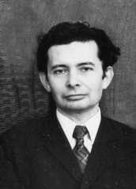

|  |
L.I. Gershtein. Born in Odessa city, USSR in 1931. Master degree received from the State Polytechnic Institute located in Gorky city in 1954. In 1957-1977 worked in NIRFI.
He was working in the Lab from 1977 to 1984 as head of instrumental group. Broadband SubMM BWO - based frequency synthesizers were developed
under his supervision
(see, e.g., Ref. 5 (1998) and Ref. 20 (2001) and references therein). This achievement formed the basis of his PhD thesis, which was defended in 1980. In 1980 he was awarded the State prize for his contribution to development of the BWO-based submillimeter-wave spectroscopy. |